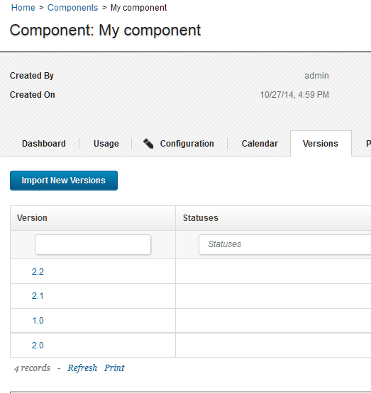

Importing versions manually
If the component does not import new versions automatically, you can import versions manually.
To set up a component to import versions manually, see Creating components.
Note: Do not give component versions the name latest, latestVersion, or newest. These names are reserved to represent the most recently created version for certain CLI commands, including requestApplicationProcess and createSnapshot. You cannot use these keywords to represent component versions in the web interface.
-
Display the Version pane for the component you want to use (Components > selected component > Versions).

-
Click Import New Versions.Depending on the source configuration type, you might see a window that prompts you for more information, such as the name of the version to import.
The new version or versions appear in the table of versions.
Parent topic: Component versions